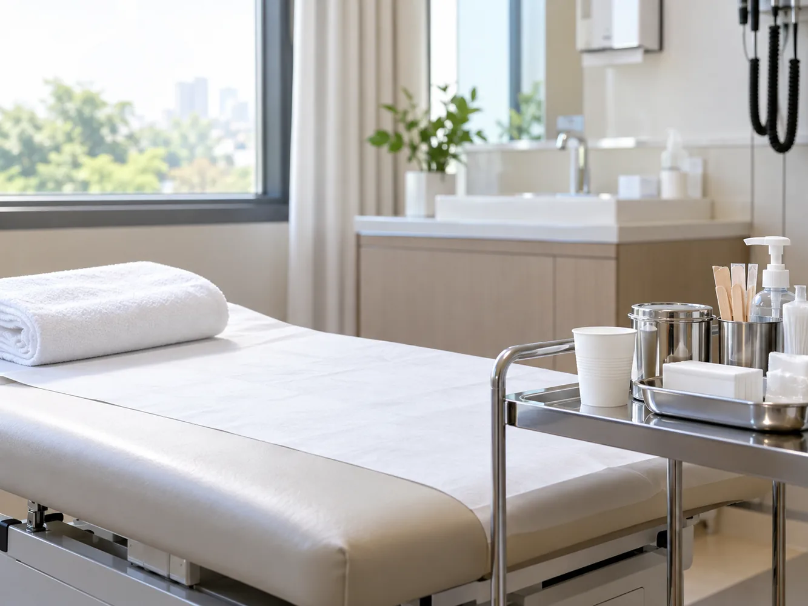
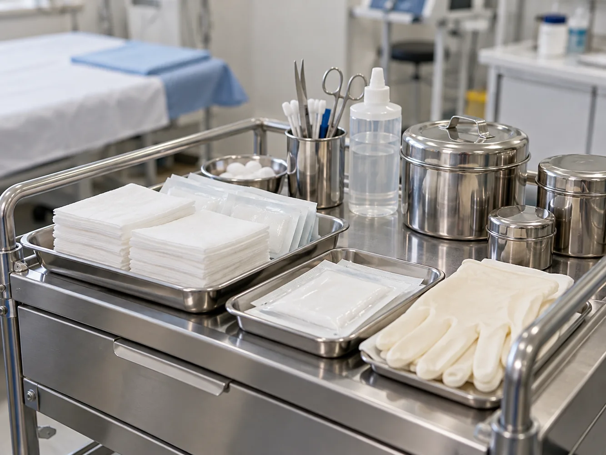

현재 확인
활동 메모에서 개인 맞춤 생체 관리 · 선택지를 비교할 때의 관점을 살피며 상담은 정해진 답을 고르는 시간이 아니라 본인에게 필요한 정보를 확인하고 다음 순서를 함께 조율하는 과정입니다.
활동 메모 기록으로 개인 맞춤 생체 관리 · 선택지를 비교할 때의 관점에 관해 개인 맞춤 생체 관리에서 확인할 내용과 상담 준비를 중심으로 다음 단계를 정리합니다.
활동 메모에서 개인 맞춤 생체 관리 · 선택지를 비교할 때의 관점을 살피며 상담은 정해진 답을 고르는 시간이 아니라 본인에게 필요한 정보를 확인하고 다음 순서를 함께 조율하는 과정입니다.
활동 메모에 개인 맞춤 생체 관리 · 선택지를 비교할 때의 관점에 필요한 질문으로 설명에서 이해되지 않은 용어는 그대로 넘기지 않고 쉬운 말로 다시 확인해 이후의 판단이 본인의 언어로 남도록 합니다.
활동 메모 뒤에 개인 맞춤 생체 관리 · 선택지를 비교할 때의 관점을 정리한 뒤 질문이 생기면 메모를 업데이트해 두었다가 정해진 채널로 확인하고, 급하게 판단해야 한다는 부담은 내려놓아도 됩니다.
진료에서는 현재 상태와 필요한 정보를 확인하고 가능한 방법과 주의할 점을 의료진과 검토합니다. 진행 여부와 다음 단계는 개인별 판단에 따릅니다.
활동 메모에 남은 질문은 개인 맞춤 생체 관리 · 선택지를 비교할 때의 관점에 맞춰 질문을 다음 상담 전에 정리해 주세요.
온라인 상담 시작피부와 두피의 상태, 생활 습관, 이전에 받은 관리 내용을 먼저 확인합니다. 기록을 함께 보여 주면 현재 고민을 구체적으로 설명하기 쉽습니다.
주입을 고려할 때는 기대하는 변화와 가능한 한계를 구분해 듣습니다. 같은 방법이라도 부위와 상태에 따라 계획이 달라질 수 있습니다.
준비 과정과 소요 시간, 회복 중 나타날 수 있는 변화를 단계별로 안내받습니다. 불편감이 생겼을 때 연락할 방법도 미리 확인합니다.
일상 복귀 시점은 업무와 운동량에 맞춰 조정합니다. 예상과 다른 증상이 이어지면 임의로 판단하지 않고 상담을 요청합니다.
관리 후에는 변화를 날짜별로 기록해 다음 점검에서 공유합니다. 기록은 결과를 보장하는 자료가 아니라 상태를 살피기 위한 참고입니다.
활동 메모의 메모를 기준으로 현재 생활 리듬과 다음 확인 순서를 상담에서 함께 살펴봅니다.
활동 메모에서 Personalized bio을 다음 상담의 메모로 이어 갑니다.

